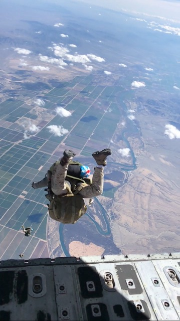

.JPG)
Achieve Your Dreams
Many people dream of flying. When I joined the military after highschool, I had a dream of one day being a paratrooper. Achieving this dream has been easily the most satisfying experience of my life.
This may come as a surprise but I, like many people, am deathly afraid of heights. This is why I love the idea of skydiving. The ultimate satisfaction can be found when you face your fears and find enjoyment in the process.
Throughout my time in the military, I was fortunate to attend 3 parachuting courses: Airborne, DBSL, and IDIS. I can say, hands down, that parachuting has been the most enjoyable thing I have ever experienced in life.
Skydiving is the closest most people can ever come to human flight.
This website is a running chronicle of my courses and experiences learning how to skydive.
I was not fortunate enough to attend a "Military Free Fall" (MFF) course during my service, and as such do not have a US Parachute Association "A" license (MFF courses certify you for your USPA "A" license). So in order to jump as a civilian, that is my next step.